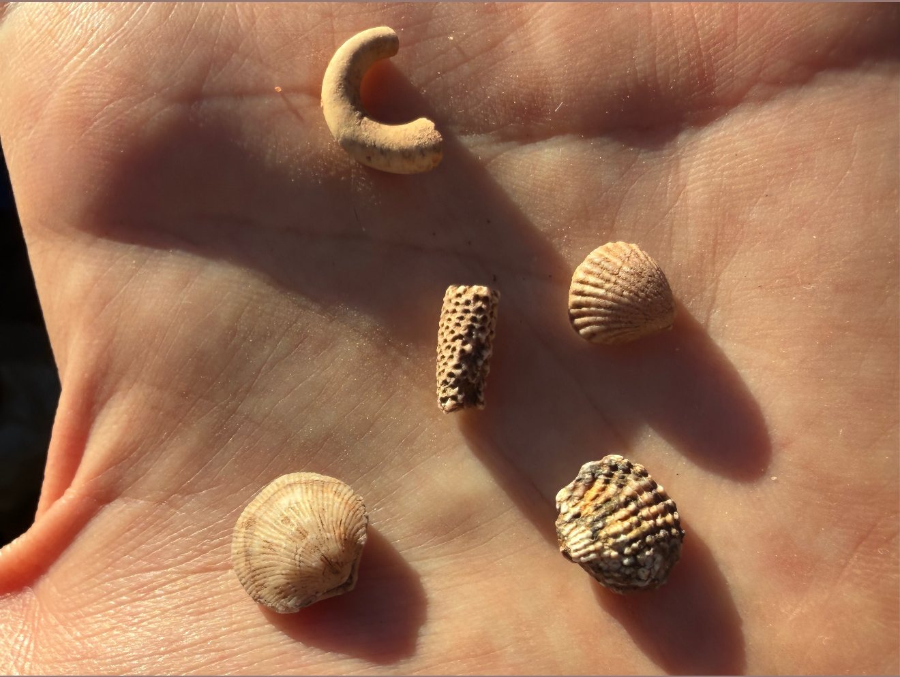
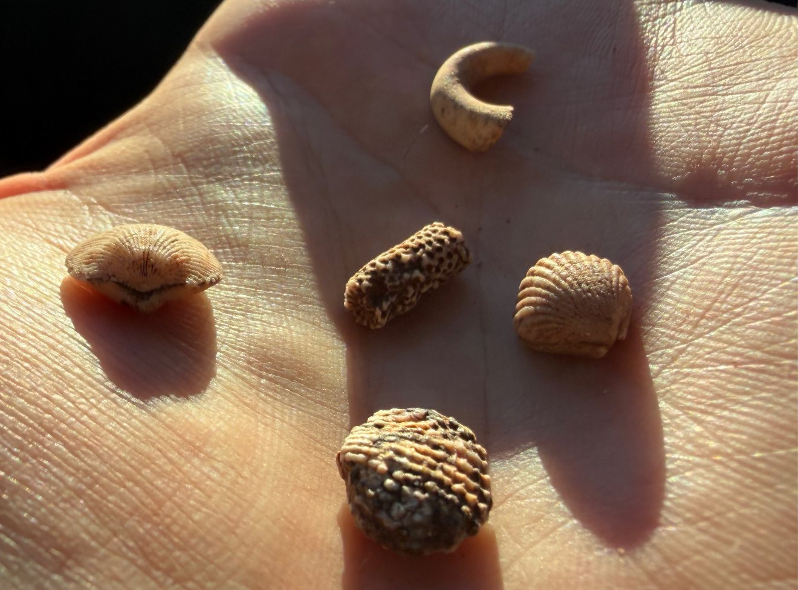
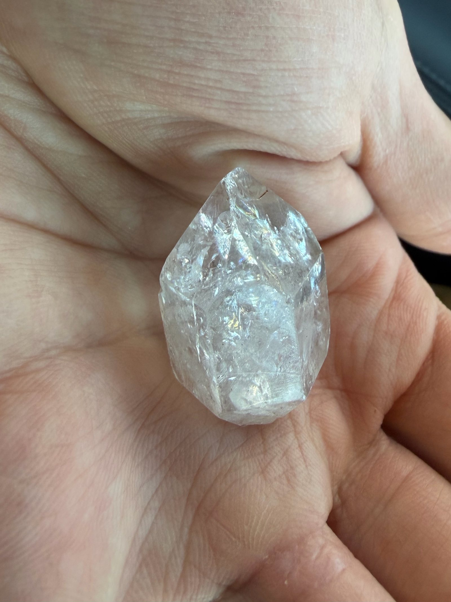
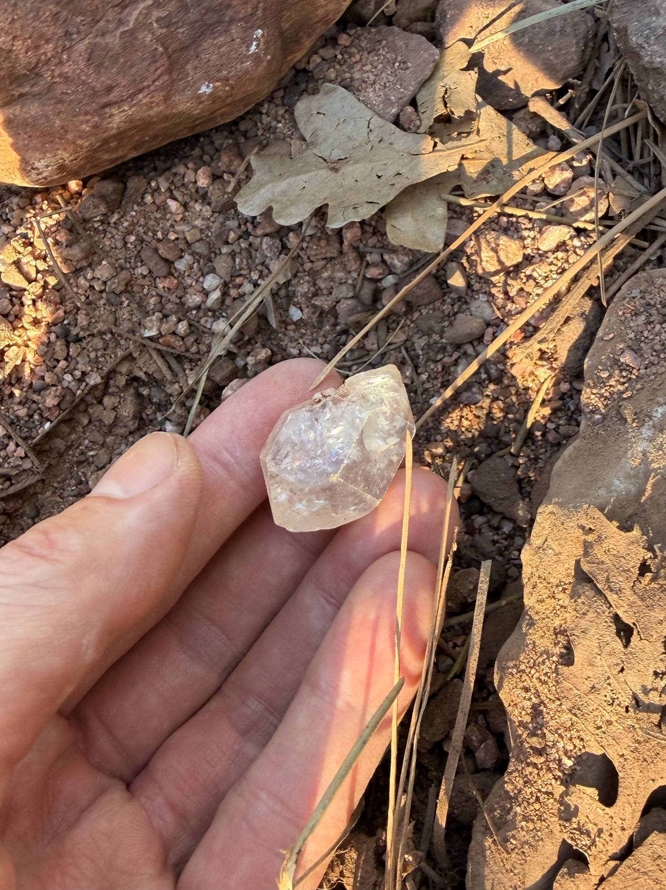
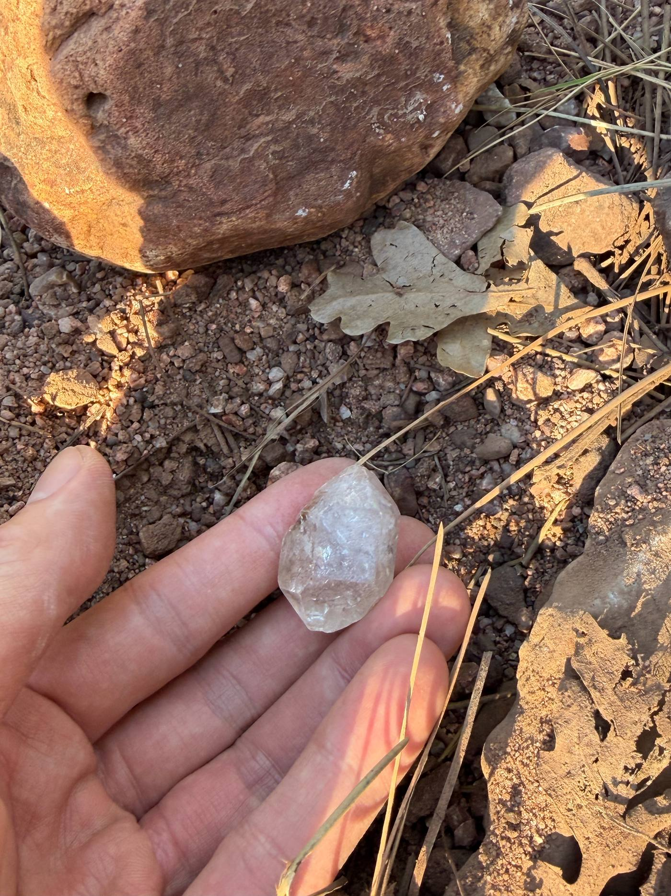

Arizona finds
Field notes from a careful walk.
These photographs come from low-impact surface collecting while learning Arizona’s geology. Identifications are field observations, not laboratory determinations. We record the region and elevation—not GPS points, claim coordinates, or a map to a hole. Small finds are study pieces, not a discovery, a resource estimate, or a commercial result.
Mogollon Rim · Payson country
Marine fossils from high country limestone.
Near Payson, along the Mogollon Rim country, at about 5,500 feet, Paleozoic marine rocks can yield small fossils from ancient seas. A field note placed this handful at roughly 300 million years old. That age is a working context for late Paleozoic marine life in the region—not a certified date. Pieces here include a curved fragment consistent with a worm tube or burrow, ribbed shells that are likely brachiopods or small clams, and a porous cylinder that may be bryozoan or coral. We leave the land as we found it.

A handful of marine fossils
From left to right in spirit: a C-shaped tube or burrow fragment, small ribbed shells, a pitted cylinder, and a darker, tightly ribbed piece. Common enough as teaching specimens; not presented as rare or valuable.

Same cluster, second look
Worm tube, clams or brachiopods, and likely coral or bryozoan — recorded at about 5,500 feet in the Mogollon Rim / Payson area. Regional context only; no site coordinates.
Payson-area quartz
Clear quartz — locally nicknamed “Payson Diamonds.”
The Payson high country, including the Diamond Rim / Diamond Point collecting country in Tonto National Forest, is known for clear quartz crystals that grew in cavities of older Paleozoic rock. Locals sometimes call well-formed pieces “Payson Diamonds.” They are quartz, not diamond. We note the region because it helps explain the geology. We do not publish a trailhead, a pit, or a claim location. Collecting, where it is allowed at all, is subject to current land-status rules, seasonal limits, and a light hand.

Water-clear, with veils
A natural quartz point, transparent in places and crossed by veils and inclusions. Typical growth texture — not a gem-grade claim.

On the ground it came from
The same kind of crystal against reddish soil, oak litter, and pine needles — the look of Arizona’s central high country, not a mapped collecting spot.

Held, then the land stays
Warm light on quartz and dry ground. We pick up what we can learn from, keep the hole small or unused, and leave the beauty of the place intact.